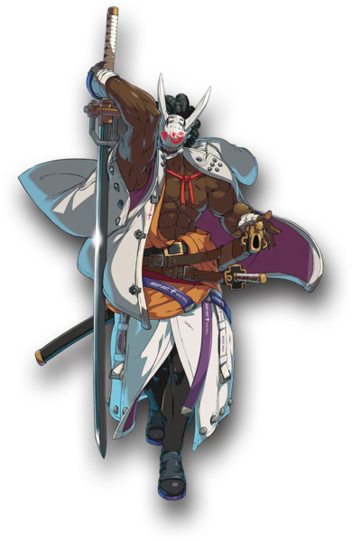

Nagoriyuki
|  |
| Damage Received Mod |
| 0.97 |
| Guts Rating |
| 4 |
| Weight |
| Heavy |
| Prejump |
| 5F |
| Backdash |
| 23/1~6 strike invuln/1~16 airborne |
| Unique Movement Options |
| Fastest Attack |
| 5P (5F) |
| Reversals |
{kind=link}
Overview
Nagoriyuki is a mid-ranged powerhouse who dynamically shifts between extended pressure strings which threaten strike/throw mix-ups and space control with massive normals, depending on what the Blood Rage mechanic allows.
Nagoriyuki's long and rewarding Guard:
AllStartup:
Depleting the Blood Gauge by landing sword normals or by feasting with Bloodsucking Universe Blood Gauge management requires situational awareness and adeptly shifting tactics midmatch. Manage the gauge well to benefit from enhanced sword normals at high Blood levels and stellar special moves at low Blood levels.
| Nagoriyuki is a powerhouse with the unique ability to special-to-special cancel and high pressure strike/throw game, limited only by your creativity and the Blood gauge. | |
| Pick if you like | Avoid if you dislike | Big damage from any hit you land, and even more with proper situational awareness and Blood management.
|
|